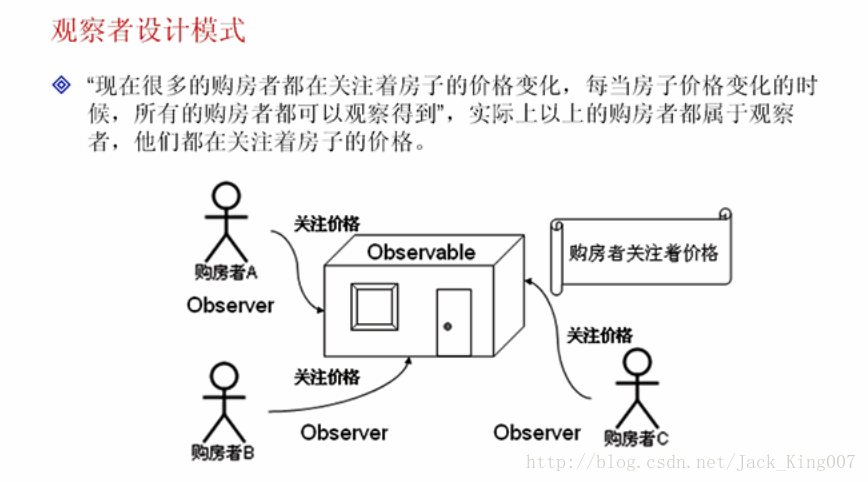

观察者设计模式
了解观察者设计模式的作用
掌握Observable类Observer接口使用

如果要是先观察者模式 必须继承接口
package KownClass;
import java.util.*;
class House extends Observable { // 表示房子可以被观察
private float price;// 价钱
public House(float price) {
this.price = price;
}
public float getPrice() {
return this.price;
}
public void setPrice(float price) {
// 每一次修改的时候都应该引起观察者的注意
super.setChanged(); // 设置变化点
super.notifyObservers(price);// 价格被改变
this.price = price;
}
public String toString() {
return "房子价格为：" + this.price;
}
};
class HousePriceObserver implements Observer {
private String name;
public HousePriceObserver(String name) { // 设置每一个购房者的名字
this.name = name;
}
public void update(Observable o, Object arg) {
if (arg instanceof Float) {
System.out.print(this.name + "观察到价格更改为：");
System.out.println(((Float) arg).floatValue());
}
}
};
public class DateDemo02 {
public static void main(String args[]) {
House h = new House(1000000);
HousePriceObserver hpo1 = new HousePriceObserver("购房者A");
HousePriceObserver hpo2 = new HousePriceObserver("购房者B");
HousePriceObserver hpo3 = new HousePriceObserver("购房者C");
h.addObserver(hpo1);
h.addObserver(hpo2);
h.addObserver(hpo3);
System.out.println(h); // 输出房子价格
h.setPrice(666666); // 修改房子价格
System.out.println(h); // 输出房子价格
}
};